The slide of the lecture is on the left, the same figure or table on the right, computed in the browser from the same data. The ▶ button moves the parameter step by step; the tables and worked examples are recomputed with it. Abbreviations: ML (machine learning), OLS (ordinary least squares), CV (cross-validation), SSE (sum of squared errors), MSE (mean squared error), RMSE (root mean squared error), RV (realised variance), HAR (heterogeneous autoregressive model), RF (random forest), GB (gradient boosting), MLP (multilayer perceptron), ReLU (rectified linear unit), RBF (radial basis function), GARCH (generalised autoregressive conditional heteroskedasticity), QLIKE (quasi-likelihood loss), DM (Diebold–Mariano test), LRV (long-run variance), OOS (out-of-sample), AUC (area under the ROC curve), VaR (value at risk), QR (quantile regression), QGB (quantile gradient boosting), HS (historical simulation), SR (Sharpe ratio), PSR (probabilistic Sharpe ratio), DSR (deflated Sharpe ratio), MA (moving average), H-L (top decile minus bottom decile), BET (index of the Bucharest Stock Exchange), pp (percentage points).
Overfitting, Bias and Variance · Validation for Time Series · Penalised Regression: Ridge and Lasso · Trees, Random Forest and Gradient Boosting · Neural Networks · Application: Forecasting Realised Volatility · Application: the Sign of Tomorrow’s Return · Application: VaR 1% by Quantile Methods · Data Snooping and the Deflated Sharpe Ratio · Case Study: Gu, Kelly and Xiu (2020)
Overfitting, Bias and Variance
Bias and Variance of Regression Trees
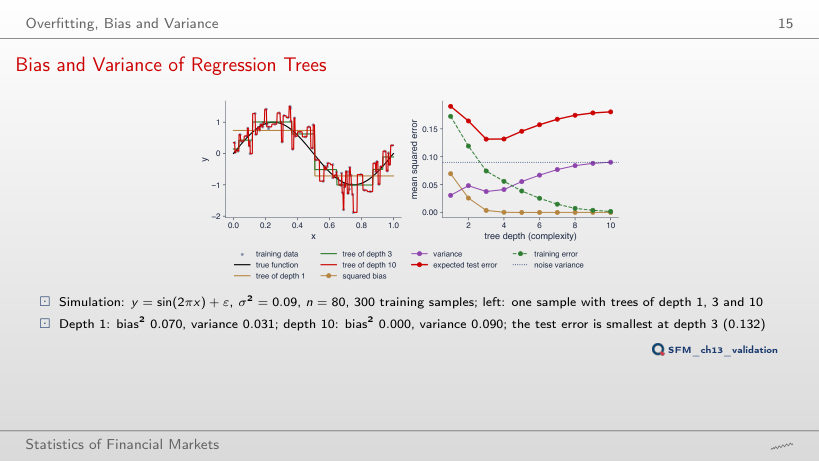
Answer
At depth 4 (0.063), against depth 3 (0.132) with σ² = 0.09. With less noise the variance of deep trees costs less, so the optimum moves to a more flexible model; with σ² = 0.25 the minimum stays at depth 3 (0.329).
Validation for Time Series
Three Validation Schemes
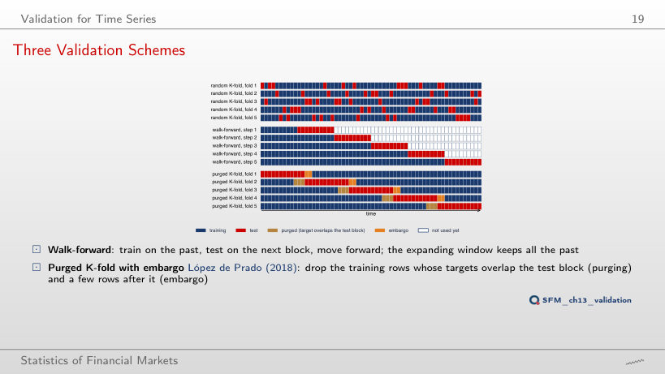
Answer
11 of 12. A random fold scatters the test days among the training days, and with overlapping targets the neighbour has almost the same target: the model has practically seen the answer. With K = 8 it is the same, 7 of 8.
Walk-Forward Validation, Step by Step
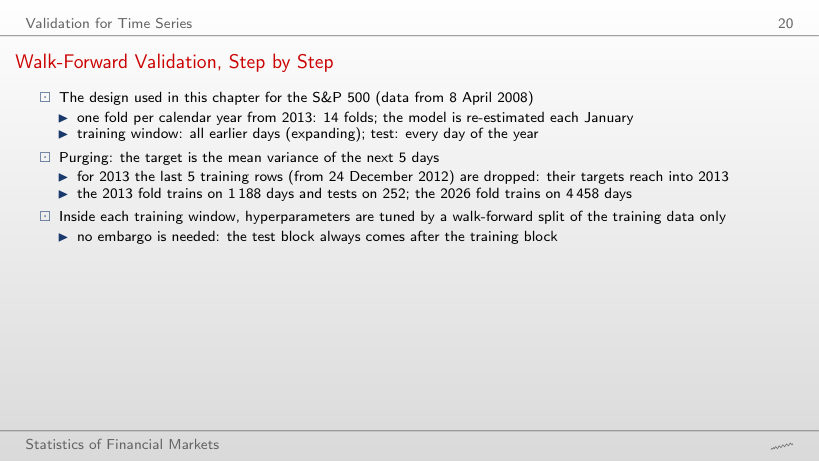
The 14 walk-forward folds (S&P 500)
Worked example: one walk-forward fold with purging
Answer
1,171: the purging removes 22 rows instead of 5, so 17 fewer than the 1,188 days with h = 5; the last training day becomes 28 November 2012. The test remains the 252 days of 2013.
Leakage in Practice: Random Folds on Overlapping Targets
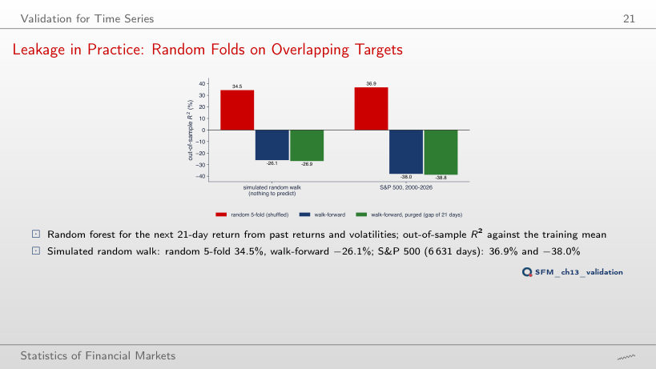
Answer
17.8%, against 34.5% with 21 days: the targets of two neighbouring days now share 4 of 5 returns, not 20 of 21, so the leakage is smaller but still large. Walk-forward stays negative (−17.5%); with 63 days random K-fold rises to 35.8%.
Penalised Regression: Ridge and Lasso
Ridge Regression (2/2)
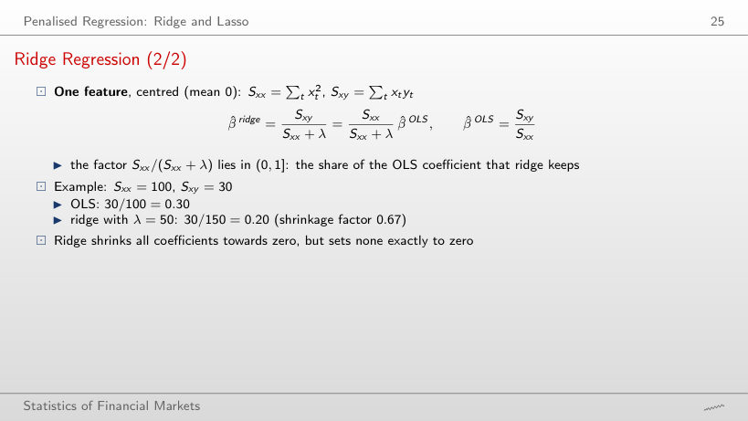
Worked example: ridge with one variable
Answer
0.10 = 30/(100 + 200); the shrinkage factor falls from 0.67 to 0.33. The coefficient approaches zero but is not zero for any finite λ; the lasso with λ = 200 is already 0.
The Lasso
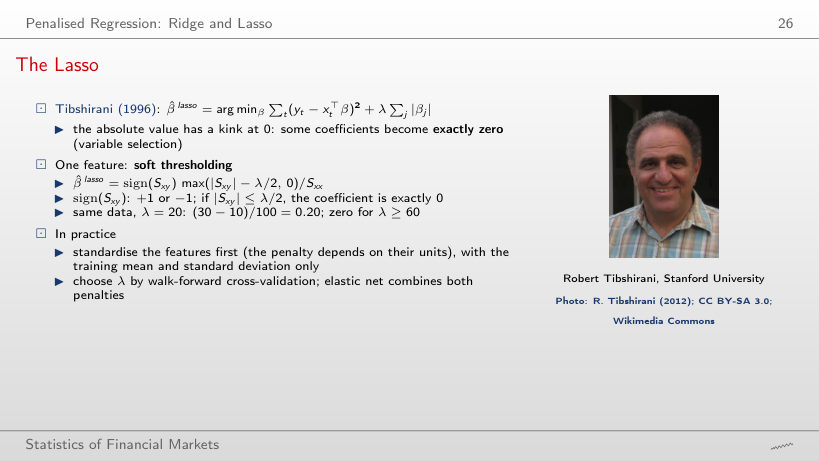
Worked example: soft thresholding
Answer
Exactly 0: λ/2 = 30 = |S_xy|, so max(30 − 30, 0) = 0, and it stays 0 for any λ ≥ 60. Ridge with the same λ would give 30/160 = 0.19.
Ridge and Lasso Paths for the Volatility Features
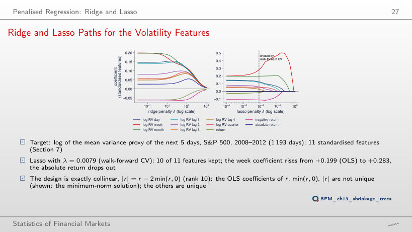
Answer
Log RV week: it stays non-zero up to λ = 0.86 on the grid, after log RV month (0.46), log RV day (0.21) and the negative return (0.18). On its own, the weekly variance is the most informative feature; ridge, on the left, sets no coefficient to zero.
Trees, Random Forest and Gradient Boosting
Worked Example: One Split, Step by Step
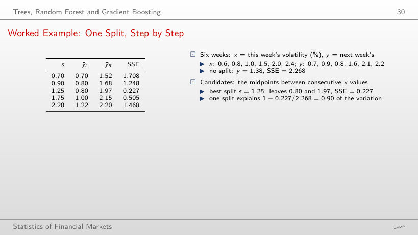
The candidate splits (the table of the slide)
Worked example: choosing the threshold
Answer
0.78 = 1 − 0.505/2.268, against 0.90 for s = 1.25. The threshold 1.75 moves the week with x = 1.5 (y = 1.6) into the left leaf, whose mean rises to 1.00 and whose deviations grow.
A Depth-2 Tree for Next Week's Volatility
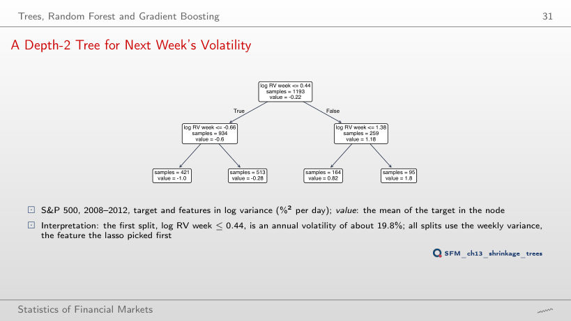
Answer
No: 5 of the 6 splits use log RV week, one uses log RV month (≤ 0.069), in the branch with moderate weekly volatility. The first split stays log RV week ≤ 0.44, because a greedy tree does not revise its choices at the top.
Random Forest
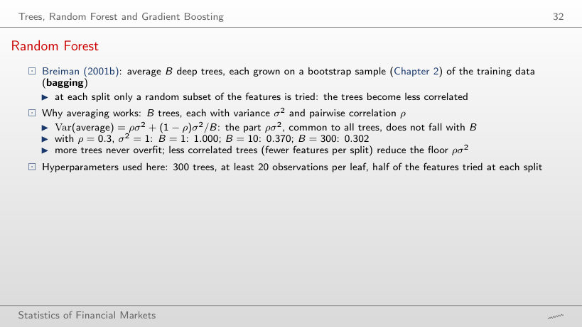
Worked example: the variance of an average of trees
Answer
0.302 = 0.3 + 0.7/300, against 0.370 at B = 10. The shared part ρσ² = 0.3 does not vanish however many trees are added; the floor falls only if the trees become less correlated.
Gradient Boosting
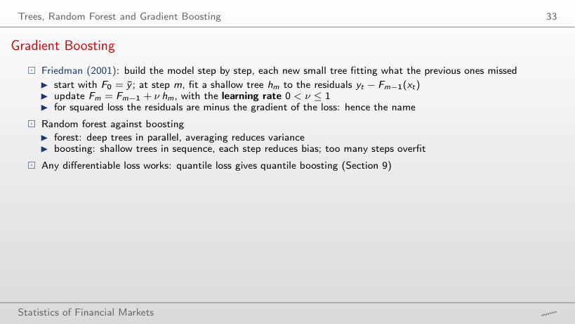
Worked example: boosting with depth-1 trees on the six weeks (extra computation)
Answer
After 4 steps: the SSE falls to 1.880, 1.566, 1.312 and 1.101. Each step applies only ν = 10% of the tree fitted to the current residuals, so the error falls geometrically, not linearly. After 50 steps the SSE is 0.007: on the training data boosting gets close to zero, which is why the number of steps is chosen on validation data.
One Tree, a Forest and Boosting on Volatility Data
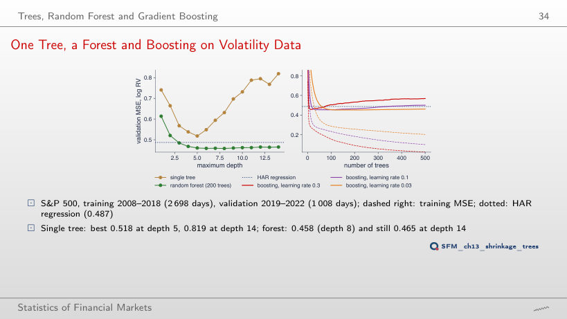
Answer
0.670, more than the plain tree of the same depth (0.631) and far above 0.458 with 200 trees. Each tree of the forest sees a bootstrap sample and only half of the features at a split, so alone it is weaker than an ordinary tree; the average removes its variance, and with 10 trees the MSE is already 0.478.
Neural Networks
From the Perceptron to the Multilayer Perceptron (2/2)
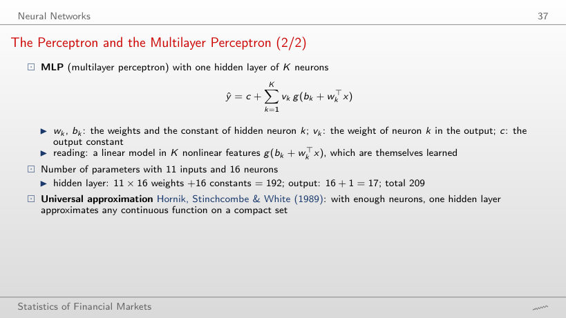
Worked example: the number of parameters
Answer
417 = 11 × 32 + 32 + 32 + 1. It does not double from 209: each extra neuron adds p + 2 = 13 parameters, and the output constant does not depend on K.
A Small Network and Its Activation Functions
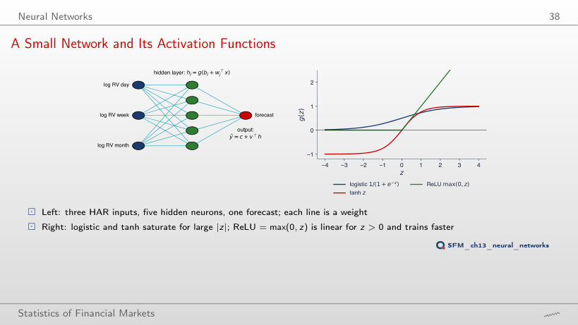
Answer
ReLU: g′(4) = 1. The logistic has g′(4) = 0.018 and tanh 0.0013: both saturate for large |z|, so the gradient passing through the neuron almost vanishes. This is why ReLU networks train faster.
Neural-Network ARCH for GBP/USD
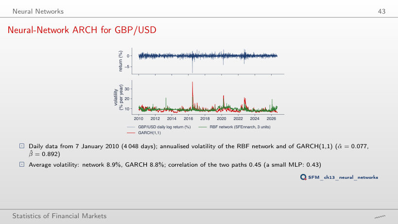
Answer
It rises to 0.61, and the maximum of the network goes from 22.0% to 27.6%; with 2 units the correlation falls to 0.26. More units give a more flexible shape, but the network still sees only the last 3 returns: the GARCH peak after the Brexit vote, 37.3%, stays far away.
The RBF Network against the Random Walk
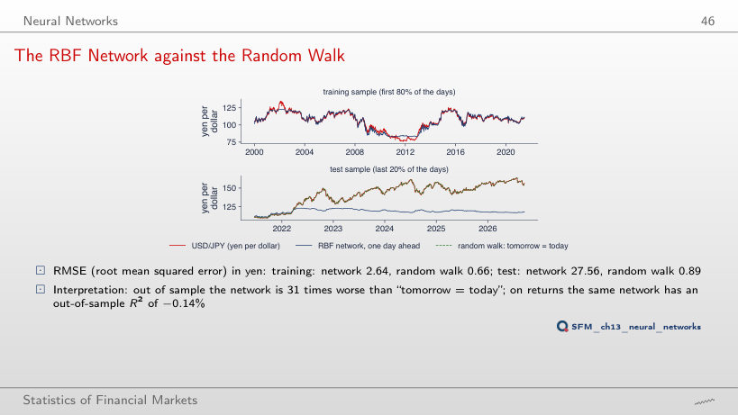
Answer
13 times (12.12 against 0.91 yen), against 31 times with 80%. The training maximum rises to 151.6, but the test reaches 163.9: the network still cannot extrapolate beyond the levels it has seen.
Application: Forecasting Realised Volatility
The HAR Benchmark (1/2)
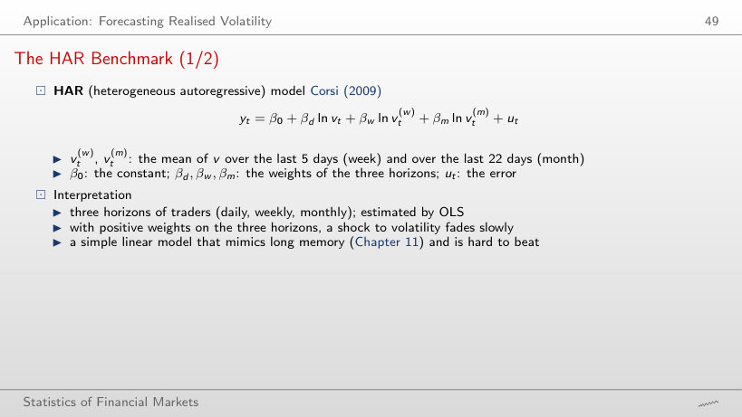
Worked example: one HAR forecast
Answer
Slightly above: 69.3% against 66.1% per year. The peak of the realised volatility in 2020, 102.4%, came before the peak of the forecast: HAR reacts after the shock, it does not anticipate it.
Evaluation (1/3): Out-of-Sample R²
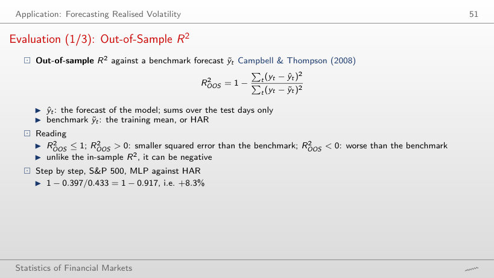
Worked example: the out-of-sample R²
Answer
+1.0%: MSE 0.429 against 0.433. Against the training mean the same model has 61.9%: R²_OOS depends on the benchmark, and HAR is a much tougher one. The DM test does not separate this gain from noise (p = 0.747).
Evaluation (2/3): QLIKE
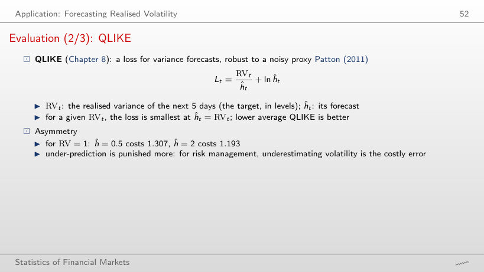
Worked example: the QLIKE loss
Answer
ĥ = 1/3: 3 + ln(1/3) = 1.901, against 1/3 + ln 3 = 1.432. Underestimating three times costs more than overestimating three times, although the squared error ranks them the other way: (1 − 1/3)² = 0.444 and (1 − 3)² = 4.
Evaluation (3/3): the Diebold–Mariano Test
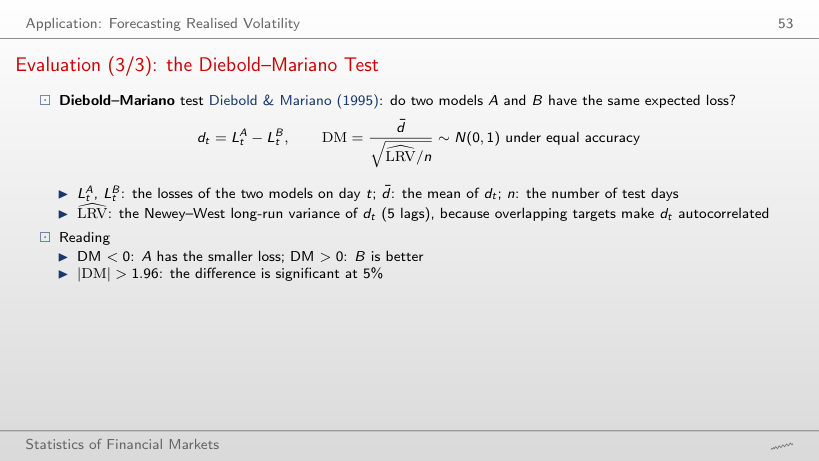
Worked example: the Diebold–Mariano statistic
Answer
It grows in absolute value, to −4.61: the long-run variance with 5 lags is 1.35 times the plain variance, because the 5-day targets overlap and make d_t autocorrelated. Without the correction the test looks surer than it is; here the conclusion (MLP better) stays the same.
Results: S&P 500 and Bitcoin
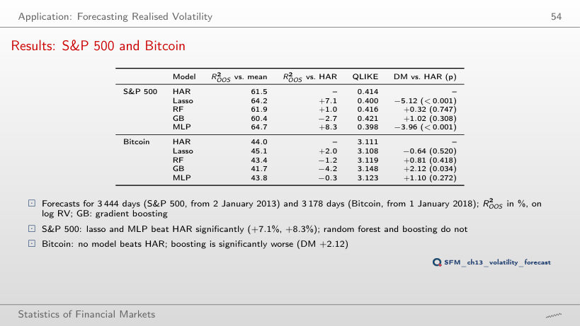
Out-of-sample results: R²_OOS on log RV (%), QLIKE, DM statistic against HAR (p-value)
Answer
Yes: R²_OOS +7.9%, DM −2.28 (p = 0.023); lasso +7.4%, DM −3.42. The random forest and boosting are not significantly better than HAR in either subperiod: up to 2019 they have −1.5% and −11.0%, from 2020 +3.5% and +5.8%, with p above 0.6.
Forecasts in Two Storms: 2020 and 2025
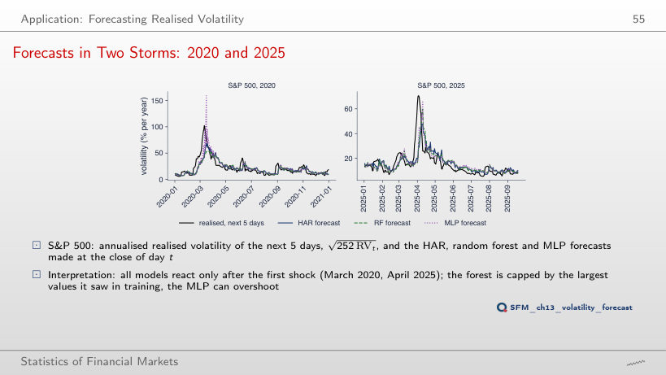
Answer
Far below: 53%, against 69% for HAR and 159% for the MLP. A random forest predicts averages of training leaves, so it stays below extreme values; the MLP and the lasso (172%) extrapolate and can overshoot the target.
The Features Used by the Forest
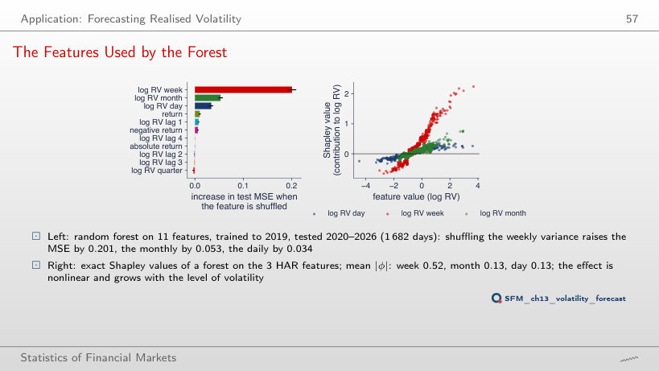
Permutation importance (10 shuffles) and mean |φ| (random forest on the 3 HAR features)
Answer
Narrower: daily φ between −0.32 and 0.35, against −0.66 and 2.25 for the week; mean |φ| 0.13 against 0.52. The forest relies on the weekly variance, which already contains part of the information of the day.
Application: the Sign of Tomorrow’s Return
The Right Baseline
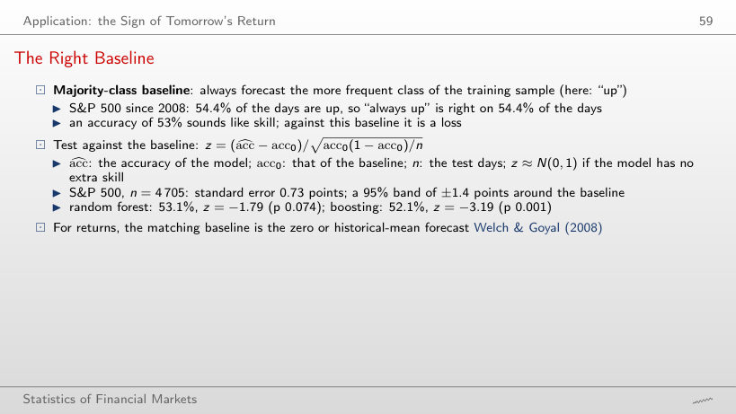
Worked example: the test against the baseline
Answer
−0.21 (53.6% against 53.8%, p = 0.84). On the S&P 500 the random forest has z = −1.79, on Bitcoin −0.99: on no market is a model significantly better than “always up”.
Accuracy against the Baseline
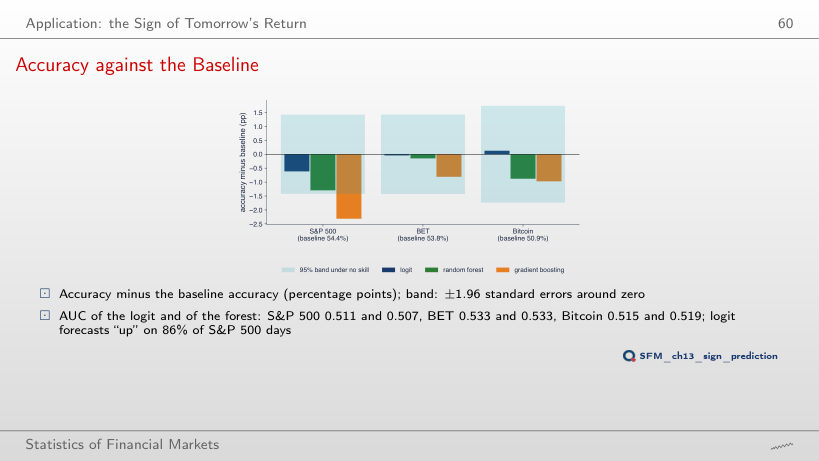
Answer
Yes: gradient boosting, −3.9 points, z = −2.77; logit and the random forest have z = −1.36 and −1.30. The 95% band is wider with fewer days, yet boosting stays outside it: the model learns patterns from the noise of the training years.
Application: VaR 1% by Quantile Methods
Quantile Regression (1/2)
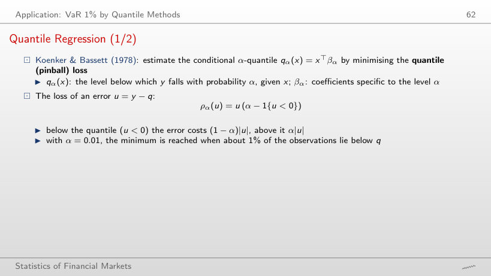
Worked example: the quantile loss on the S&P 500 returns
Answer
q = −1.59%, the empirical 5% quantile: 4.99% of the days lie below it. For α = 0.01 the minimum is at −3.07% (0.99% of the days below). The mean return, 0.05%, minimises the squared error, not the quantile loss.
Backtest of VaR 1%: Quantile Methods, HS and GARCH-t (1/2)
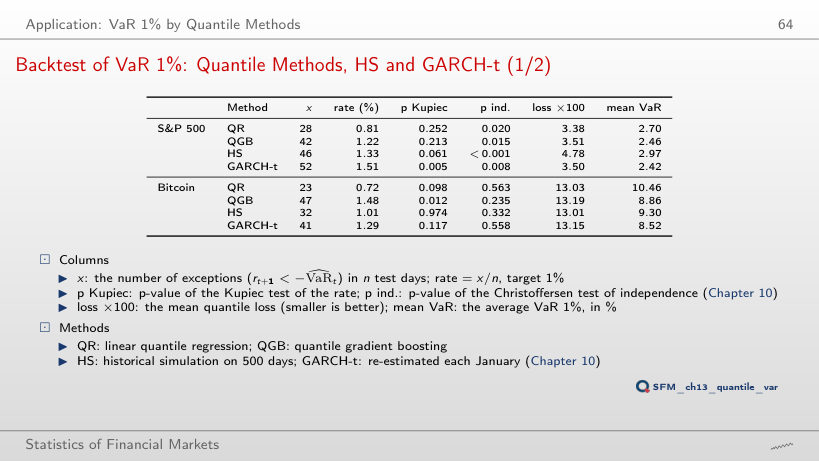
Backtest of VaR 1% (the table of the slide)
Answer
Yes: 1.60% (27 of 1,686 days), p = 0.022. QR has 0.71% (p = 0.21), and the HS exceedances cluster (p ind. 0.005). For Bitcoin from 2020, QR is exceeded too rarely: 0.45%, p Kupiec 0.002.
VaR 1% Forecasts in 2020 and 2025
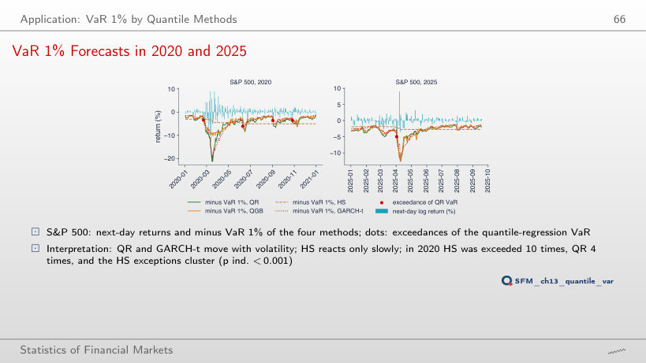
Answer
HS: 5 exceedances, against 4 for GARCH-t and 1 each for QR and QGB. After 500 calm days, historical simulation enters April 2025 with a VaR that is too small and reacts slowly.
Data Snooping and the Deflated Sharpe Ratio
The Best of N Strategies (2/2)
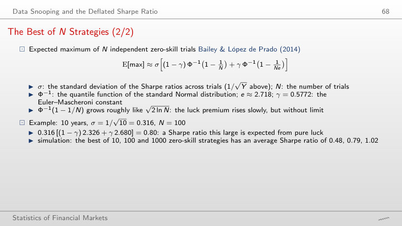
Worked example: the expected maximum of N Sharpe ratios
Answer
0.566 = 0.800/√2, because σ = 1/√20 = 0.224; the simulation gives 0.559. More years reduce the selection bias only by √Y: with N = 1,000 the maximum is still 0.728.
Selection Bias in Practice
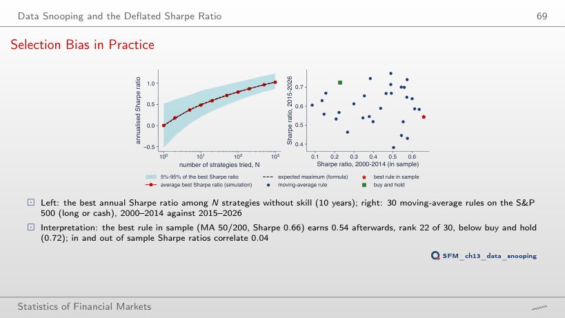
Answer
MA 5/200 (Sharpe 0.57 in sample), with 0.74 after 2014, rank 3 of 30. With all 30 rules the winner, MA 50/200 (0.66), ends at rank 22: choosing among more rules raises the in-sample Sharpe ratio, not the future one.
The Deflated Sharpe Ratio (2/2)
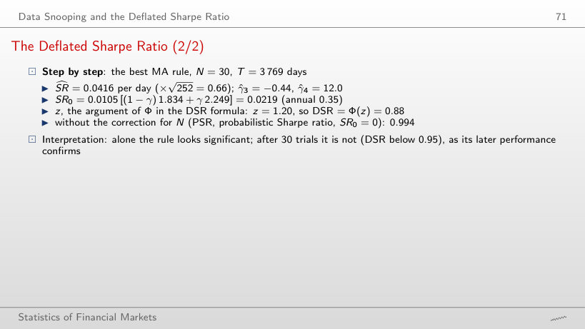
Worked example: the deflated Sharpe ratio of the best MA rule
Answer
Up to N = 6: DSR = 0.961 at N = 5, 0.955 at N = 6 and 0.949 at N = 7; at N = 30, 0.884. Without the correction (PSR) the rule would look significant, with 0.994: SR₀ grows slowly with N, but SR̂ = 0.0416 per day has a thin margin.
Case Study: Gu, Kelly and Xiu (2020)
Results: Small R², Large Economic Value
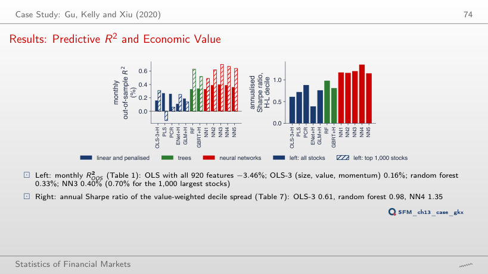
Answer
No: NN3 has the highest R² (0.40%), NN4 the highest Sharpe ratio (1.35, against 1.20 for NN3). The R² differences between the networks are a few hundredths of a percentage point, and the ranking by economic value can differ.
Course data in data/market (up to 18 September 2026): S&P 500 and Bitcoin (open, high, low and close prices), BET, GBP/USD, the German 10-year yield, gold, USD/JPY. The bias–variance simulation, the validation diagram, the ridge and lasso paths, the trees, the random-forest and boosting curves, the RBF and MLP networks, and the walk-forward forecasts of the six volatility models, of the sign classifiers and of the four VaR methods come from the code of the lecture (Quantlets/Ch_13, seeds 2026 and 3); the heavy models are not refitted in the browser. From these forecasts the browser recomputes HAR, the out-of-sample R², QLIKE, the Diebold–Mariano test, accuracy, the z test, AUC, the Kupiec and Christoffersen tests, the quantile loss, the expected maximum Sharpe ratio and the DSR. Gu, Kelly and Xiu (2020): the values published in Tables 1 and 7 of the paper. Other noise levels, horizons, depths, numbers of trees and units, training shares, periods and split years are extra runs of the same code; the boosting example on the six weeks is an extra computation.